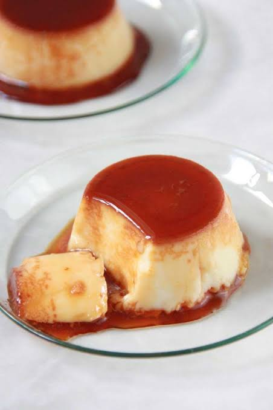

| Raciones | 6 personas |
|---|---|
| Preparación | 15 minutos |
| Cocción | 50 minutos |
| Reposo | 4 horas en la nevera |
Ingredientes
Para el flan
- 1 litro de leche entera
- 4 huevos
- 150 g de azúcar
- 1 cucharadita de extracto de vainilla
Para el caramelo
- 100 g de azúcar
- 2 cucharadas de agua
Preparación
- Precalienta el horno a 160 °C.
- Haz el caramelo: pon el azúcar y el agua en un cazo a fuego medio, sin remover, hasta que tome color dorado. Viértelo enseguida en el fondo del molde.
- Bate los huevos con el azúcar sin montarlos demasiado, para que no se formen burbujas.
- Añade la leche y la vainilla y mezcla bien.
- Cuela la mezcla y viértela en el molde sobre el caramelo.
- Colócalo dentro de una bandeja con agua caliente (baño maría) y hornea unos 50 minutos. Está listo cuando al pinchar con un palillo este sale limpio.
- Deja enfriar, guárdalo en la nevera al menos 4 horas y desmóldalo justo antes de servir.
Consejos
Colar la mezcla antes de hornear es el truco para que el flan quede suave y sin burbujas. Para desmoldarlo, pasa un cuchillo fino por los bordes.